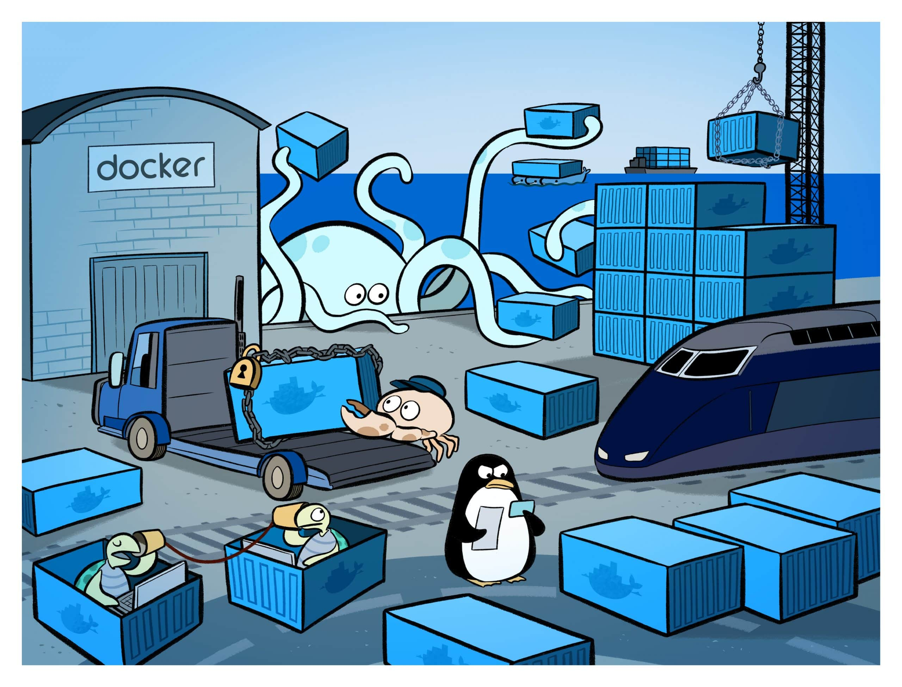

Вернуться на главную

Docker — это проект с открытым исходным кодом для автоматизации развертывания приложений в виде переносимых автономных контейнеров, выполняемых в облаке или локальной среде. Одновременно с этим, Docker — это компания, которая разрабатывает и продвигает эту технологию в сотрудничестве с поставщиками облачных служб, а также решений Linux и Windows, включая корпорацию Майкрософт.